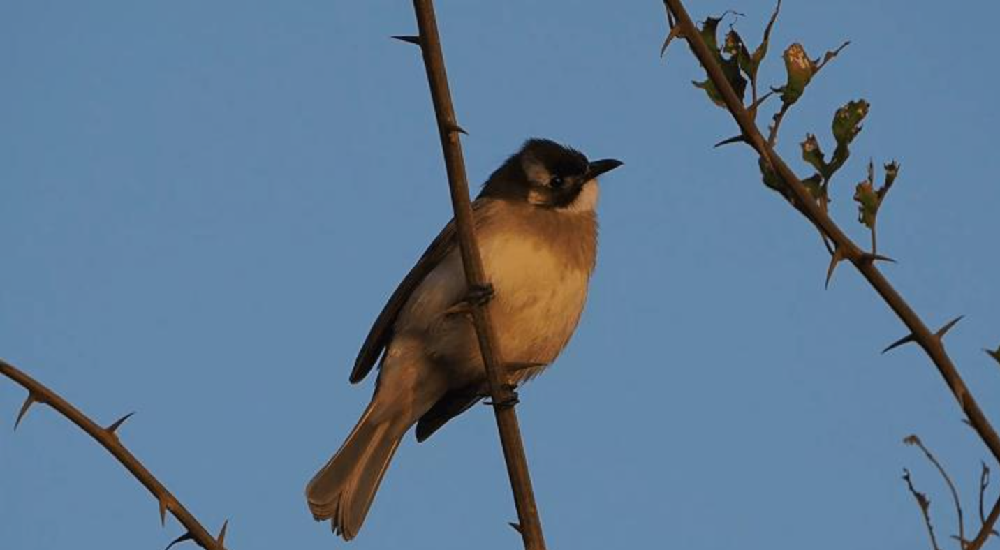
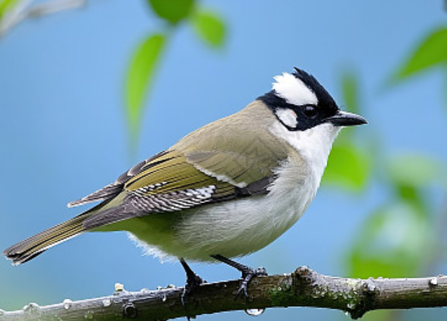
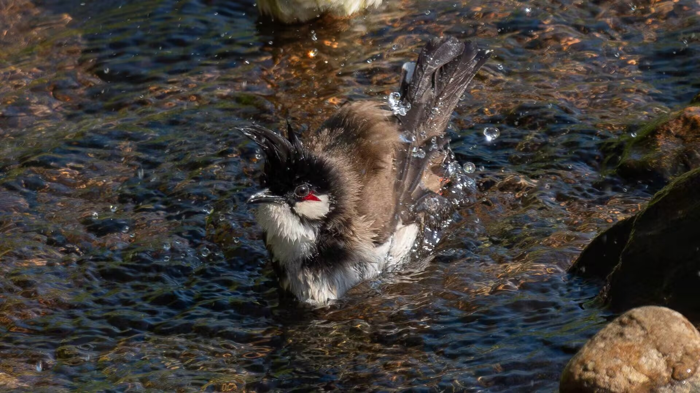
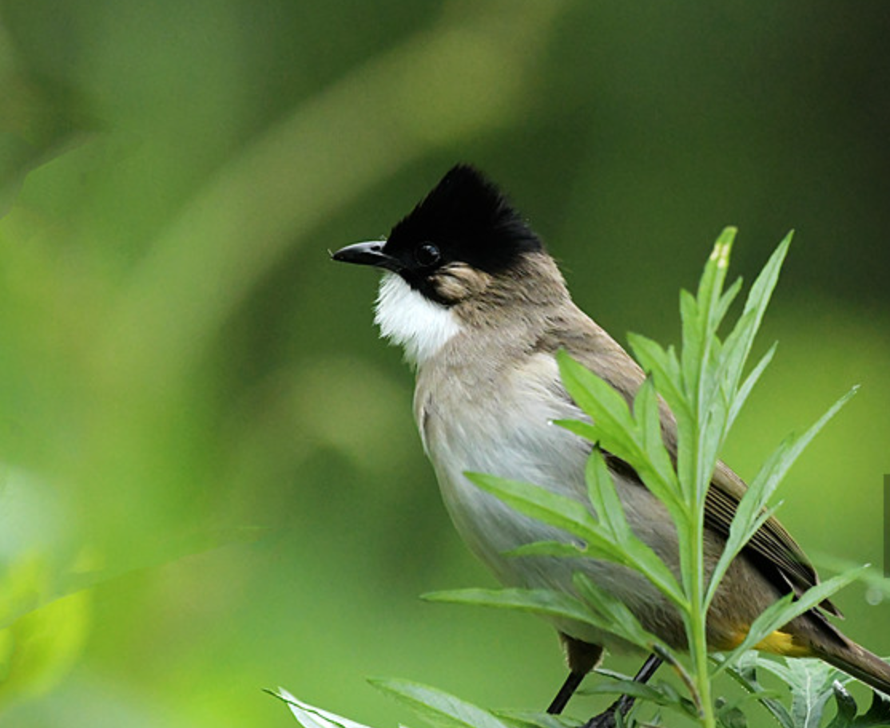
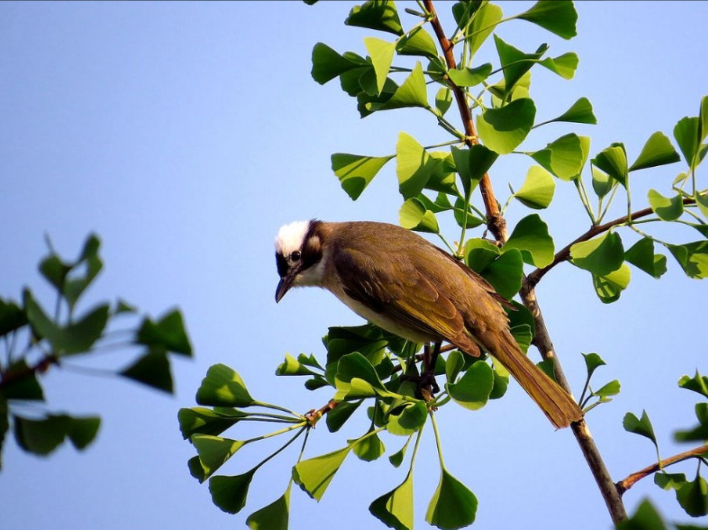

羽翼守望者


鹎属（Pycnonotus）隶属于鹎科，全球约30种，分布于亚洲和非洲热带地区。体型中等（约18-22cm），羽毛以褐、灰、黑为主，常具白色枕部或红耳簇。杂食性，以昆虫、果实、花蜜为食，是城市园林中重要的种子传播者。
繁殖期营巢于灌丛或树上，每窝产3-5枚卵。鹎属适应城市环境，在公园、小区和街道绿化带中极为常见。
📖 参考：点此处 查看国际鸟盟资料。

白头鹎是中国南方最普遍的鹎类，体长约18-20cm，上体橄榄绿色，头部黑色，枕部白色，俗称“白头翁”。广泛分布于长江流域及以南地区，在城市公园、小区绿地中极为常见。
杂食性，以昆虫、果实为食，喜食桑葚、女贞子等。繁殖期3-8月，营巢于灌丛或树枝上，每窝产3-4枚卵。因适应性强，种群数量丰富。

红耳鹎体长约19-21cm，头顶黑色具高耸羽冠，耳部具红色斑块，臀部红色。分布于亚洲南部，在中国南方城市中常见。
以昆虫和果实为食，常成群活动。繁殖期3-7月，营巢于树上，每窝产3-4枚卵。


鹎属是城市植物种子传播的重要媒介，保护园林绿地、种植本土果树对它们有益。
📖 了解更多：点此处 查看中国林草局。